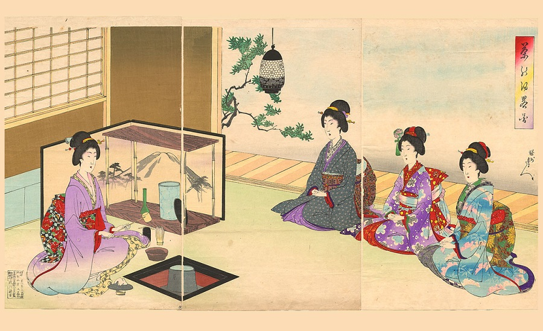
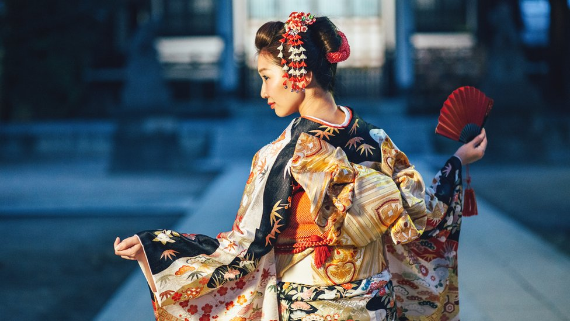
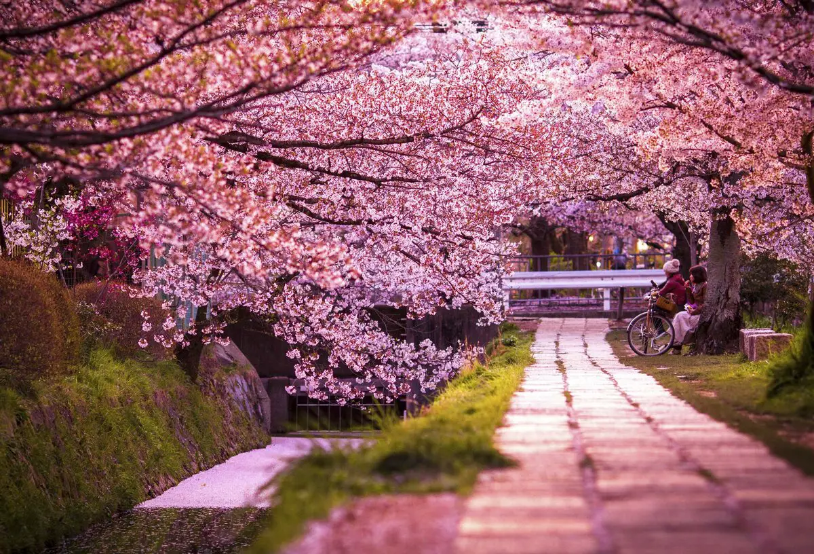
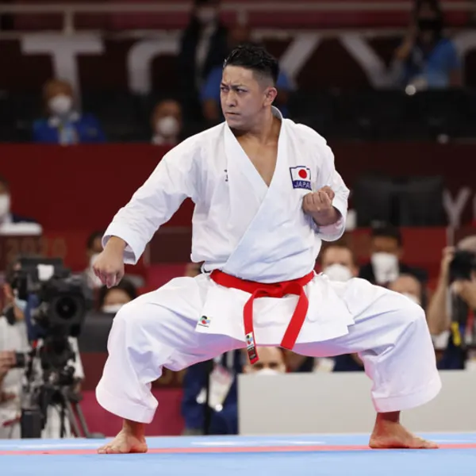

Arte do Origami
O origami é a arte tradicional japonesa de dobrar papel. Essa prática antiga envolve criar figuras complexas apenas com dobras, sem o uso de cola ou cortes.
Cerimônia do Chá
A cerimônia do chá é um ritual importante na cultura japonesa, simbolizando a simplicidade, harmonia e respeito. É conhecida como "chanoyu" ou "chado".
Kimono
O kimono é a vestimenta tradicional japonesa, usada em eventos formais. Os tecidos e padrões dos kimonos refletem as estações e a estética japonesa.
Festival de Hanami
O Hanami é o famoso festival de observação das flores de cerejeira (sakura), que acontece durante a primavera. É uma celebração da beleza efêmera da natureza.
Tradição de Artes Marciais
As artes marciais têm um papel central na cultura do Japão. Entre as mais famosas estão o Karatê, Judô, Aikido e Kendo. Essas práticas não são apenas sobre combate, mas também sobre disciplina, autocontrole e filosofia de vida.